Fisica – Classe 4F
Meccanica dei Fluidi e Termodinamica dei Gas
Capitolo 1: Statica dei Fluidi: Pressione, Stevino, Pascal e Archimede
La pressione è una grandezza scalare fondamentale definita come rapporto tra la forza perpendicolare e l'area: $$p = \frac{F_\perp}{S} \quad [\text{Pa} = \text{N/m}^2]$$ Nei liquidi a riposo, la pressione esercitata dal peso proprio della colonna fluida è regolata dalla Legge di Stevino:
dove $p_0 \approx 1{,}013 \cdot 10^5\,\text{Pa}$ è la pressione atmosferica al livello del mare e $\rho$ è la densità del liquido ($\rho_{\text{acqua}} = 1000\,\text{kg/m}^3$, $\rho_{\text{mercurio}} = 13\,600\,\text{kg/m}^3$).
La pressione esercitata in qualsiasi punto di un liquido incomprimibile si trasmette inalterata a ogni altra superficie a contatto col liquido. Nel torchio idraulico: $$\frac{F_1}{S_1} = \frac{F_2}{S_2} \implies \mathbf{F_2 = F_1 \left(\frac{S_2}{S_1}\right)}$$ Il lavoro compiuto si conserva rigorosamente: $W_2 = F_2 \Delta l_2 = F_1 \Delta l_1 = W_1$.
Ogni corpo immerso in un fluido riceve una spinta verticale orientata verso l'alto pari al peso del fluido spostato: $$\mathbf{F_A = \rho_{\text{fluido}} \cdot V_{\text{immerso}} \cdot g}$$ Condizione di galleggiamento all'equilibrio statico ($P = F_A$): $$\mathbf{\frac{V_{\text{immerso}}}{V_{\text{totale}}} = \frac{\rho_{\text{corpo}}}{\rho_{\text{fluido}}}} \implies \mathbf{\frac{V_{\text{emerso}}}{V_{\text{totale}}} = 1 - \frac{\rho_{\text{corpo}}}{\rho_{\text{fluido}}}}$$
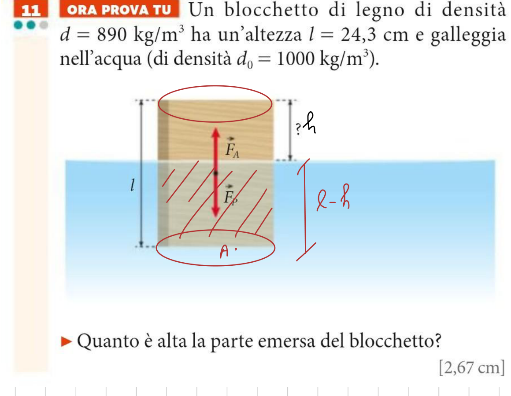
Dati: $d_c = 890\,\text{kg/m}^3$, $l = 24{,}3\,\text{cm} = 0{,}243\,\text{m}$, $d_0 = 1000\,\text{kg/m}^3$.
Risoluzione: All'equilibrio $F_A = F_p \implies d_0 \cdot g \cdot A (l - h) = d_c \cdot g \cdot A \cdot l$.
Semplificando $g$ e $A$:
$$h = l \left(1 - \frac{d_c}{d_0}\right) = 0{,}243\,\text{m} \cdot \left(1 - \frac{890}{1000}\right) = 0{,}243 \cdot 0{,}11 = \mathbf{0{,}0267\,\text{m} \approx 2{,}67\,\text{cm}}$$
Frazione percentuale emersa: $\dfrac{h}{l} = 11\%$.
Capitolo 2: Dinamica dei Fluidi Ideali ed Equazione di Continuità
In regime stazionario, per un fluido ideale incompressibile la portata volumetrica $Q$ si conserva identica lungo l'intero condotto:
Dati: $A_1 = 2{,}0\,\text{cm}^2 = 0{,}00020\,\text{m}^2$, $v_1 = 6{,}0 \cdot 10^{-2}\,\text{m/s}$, $A_2 = 0{,}80\,\text{cm}^2 = 0{,}000080\,\text{m}^2$.
Calcolo portata: $q = A_1 \cdot v_1 = (2{,}0 \cdot 10^{-4}) \cdot (6{,}0 \cdot 10^{-2}) = \mathbf{1{,}2 \cdot 10^{-5}\,\text{m}^3/\text{s}}$.
Velocità nella strozzatura: $v_2 = \dfrac{q}{A_2} = \dfrac{1{,}2 \cdot 10^{-5}}{8{,}0 \cdot 10^{-5}} = \mathbf{0{,}15\,\text{m/s}}$.
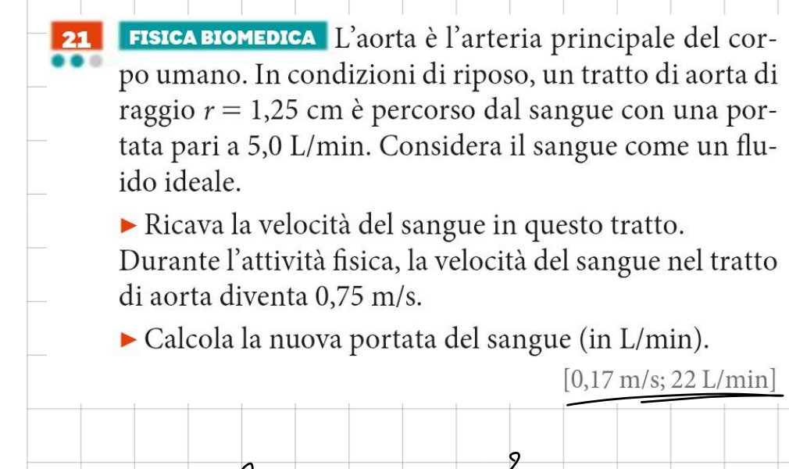
Dati: $r = 1{,}25\,\text{cm} = 1{,}25 \cdot 10^{-2}\,\text{m}$, $q_1 = 5{,}0\,\text{L/min}$, $v_2 = 0{,}75\,\text{m/s}$.
1. Portata in unità SI: $q_1 = 5{,}0 \cdot \frac{10^{-3}\,\text{m}^3}{60\,\text{s}} \approx 8{,}33 \cdot 10^{-5}\,\text{m}^3/\text{s}$.
Area della sezione: $A = \pi r^2 = \pi (1{,}25 \cdot 10^{-2})^2 \approx 4{,}91 \cdot 10^{-4}\,\text{m}^2$.
Velocità a riposo: $v_1 = \dfrac{q_1}{A} = \dfrac{8{,}33 \cdot 10^{-5}}{4{,}91 \cdot 10^{-4}} \approx \mathbf{0{,}17\,\text{m/s}}$.
2. Nuova portata durante sforzo aerobico: poiché la sezione è costante, $\dfrac{q_2}{v_2} = \dfrac{q_1}{v_1} \implies q_2 = 5{,}0 \cdot \dfrac{0{,}75}{0{,}17} \approx \mathbf{22\,\text{L/min}}$.
Capitolo 3: L'Equazione di Bernoulli, l'Effetto Venturi e Torricelli
L'Equazione di Bernoulli traduce il principio di conservazione dell'energia meccanica per un fluido ideale:
La velocità con cui un liquido fuoriesce da un piccolo foro posto a profondità $h$ al di sotto del pelo libero di un grande serbatoio aperto all'atmosfera coincide esattamente con la caduta libera di un grave da fermo: $$\mathbf{v = \sqrt{2 \cdot g \cdot h}}$$
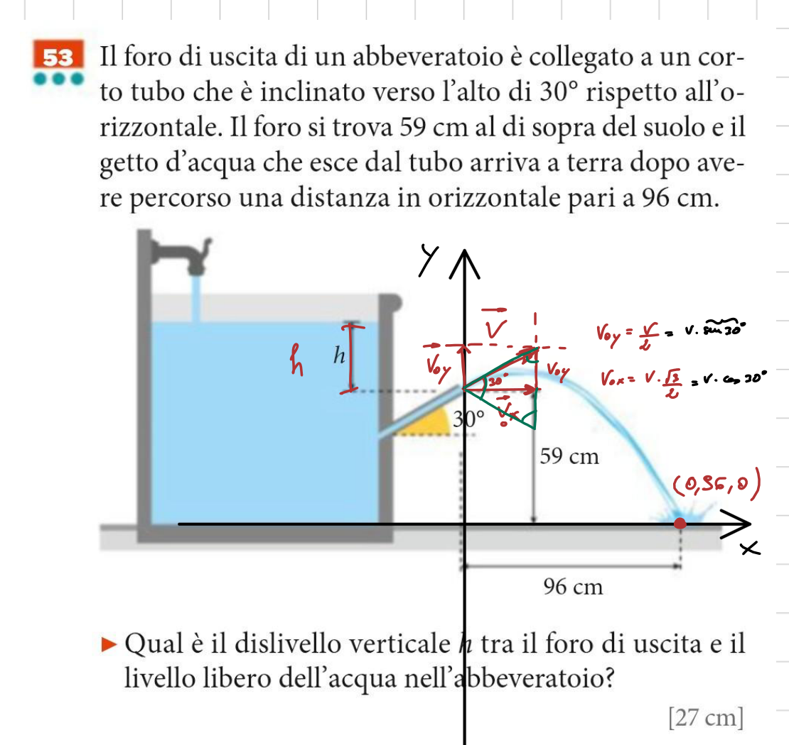
Dati: $\theta = 30^\circ$, $y_0 = 59\,\text{cm} = 0{,}59\,\text{m}$, $x = 96\,\text{cm} = 0{,}96\,\text{m}$, $h = ?$.
Cinematica del proiettile: $v_{0x} = v \frac{\sqrt{3}}{2}$, $v_{0y} = \frac{v}{2}$.
Dalla traiettoria a quota zero al suolo:
$$0 = y_0 + \frac{x}{\sqrt{3}} - \frac{2gx^2}{3v^2} \implies v \approx 2{,}30\,\text{m/s}$$
Applicando il Teorema di Torricelli $v = \sqrt{2gh}$:
$$h = \frac{v^2}{2g} = \frac{(2{,}30)^2}{2 \cdot 9{,}81} \approx \mathbf{0{,}27\,\text{m} = 27\,\text{cm}}$$
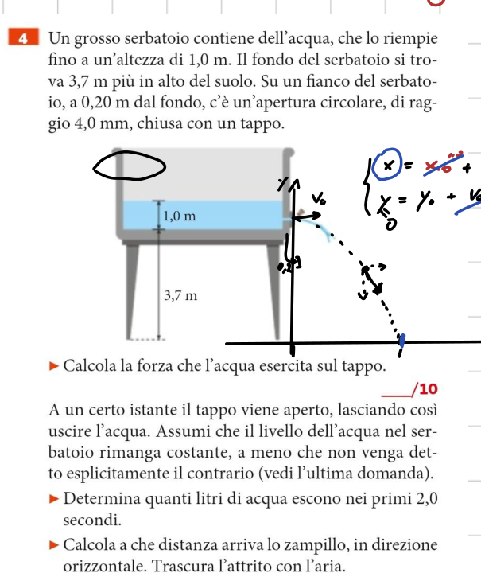
Dati: $H_1 = 1{,}0\,\text{m}$, fondo a quota $3{,}7\,\text{m}$, foro a $0{,}20\,\text{m}$ dal fondo, raggio $r = 4{,}0\,\text{mm}$.
1. Forza sul tappo: battente $h = 1{,}0 - 0{,}20 = 0{,}80\,\text{m} \implies p_{\text{idr}} = \rho g h = 7848\,\text{Pa}$. Area $S = \pi (0{,}004)^2 \approx 5{,}03 \cdot 10^{-5}\,\text{m}^2$.
$$F = p \cdot S = 7848 \cdot 5{,}03 \cdot 10^{-5} \approx \mathbf{0{,}39\,\text{N}}$$
2. Litri erogati in $2{,}0\,\text{s}$: $v = \sqrt{2gh} \approx 3{,}96\,\text{m/s}$, $Q = S v \approx 0{,}199\,\text{L/s} \implies V = 0{,}199 \cdot 2{,}0 \approx \mathbf{0{,}40\,\text{L}}$.
3. Gittata dello zampillo al suolo: quota $y_0 = 3{,}7 + 0{,}20 = 3{,}9\,\text{m} \implies t_c = \sqrt{2 y_0 / g} \approx 0{,}89\,\text{s} \implies x = v \cdot t_c \approx \mathbf{3{,}5\,\text{m}}$.
4. Tempo svuotamento per abbassare il livello di $1\,\text{cm}$ ($A_1 = 8{,}2\,\text{m}^2$): $v_1 = Q/A_1 = 0{,}24 \cdot 10^{-4}\,\text{m/s} \implies t = 0{,}01 / (0{,}24 \cdot 10^{-4}) \approx \mathbf{4{,}1 \cdot 10^2\,\text{s}}$.
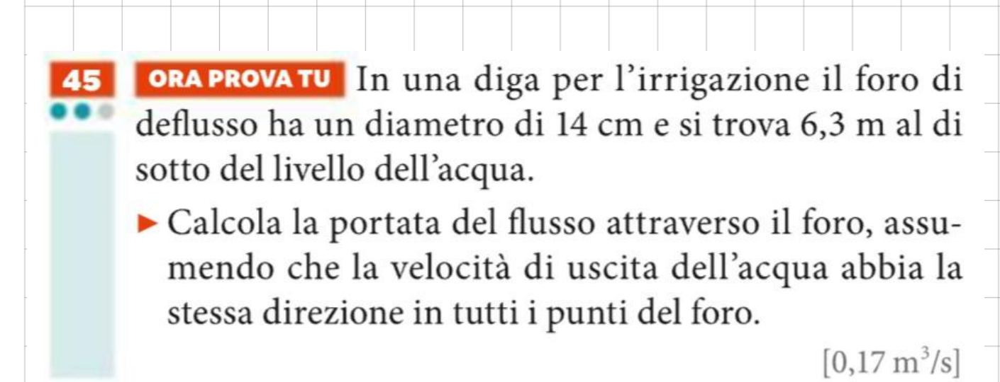
Dati: $d = 14\,\text{cm} = 0{,}14\,\text{m}$, $h_A = 6{,}3\,\text{m}$.
Velocità di efflusso: $v_B = \sqrt{2 g h_A} = \sqrt{2 \cdot 9{,}81 \cdot 6{,}3} \approx 11{,}1\,\text{m/s}$.
Area della sezione: $A = \frac{\pi d^2}{4} = \frac{\pi (0{,}14)^2}{4} \approx 0{,}01539\,\text{m}^2$.
Portata volumetrica: $q = A \cdot v_B = 0{,}01539 \cdot 11{,}1 \approx \mathbf{0{,}17\,\text{m}^3/\text{s}}$.
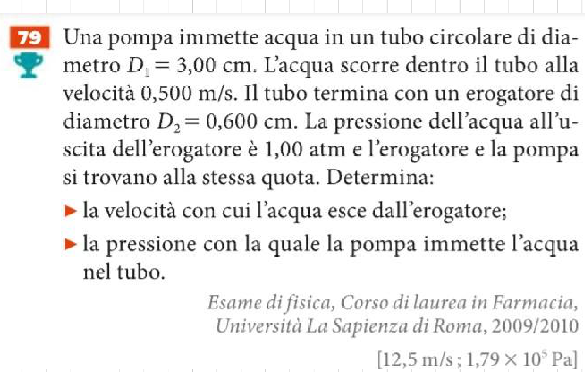
Dati: $D_1 = 3{,}00\,\text{cm} = 0{,}030\,\text{m}$, $v_1 = 0{,}500\,\text{m/s}$, $D_2 = 0{,}600\,\text{cm} = 0{,}0060\,\text{m}$, $p_2 = 1{,}00\,\text{atm} = 1{,}013 \cdot 10^5\,\text{Pa}$.
1. Velocità di uscita dall'erogatore:
$$v_2 = v_1 \left(\frac{D_1}{D_2}\right)^2 = 0{,}500 \cdot \left(\frac{0{,}030}{0{,}0060}\right)^2 = 0{,}500 \cdot 25 = \mathbf{12{,}5\,\text{m/s}}$$
2. Pressione fornita dalla pompa: da Bernoulli orizzontale:
$$p_1 = p_2 + \frac{1}{2}\rho(v_2^2 - v_1^2) = 1{,}013 \cdot 10^5 + 500 \cdot (156{,}25 - 0{,}25) = 1{,}013 \cdot 10^5 + 78\,000 \approx \mathbf{1{,}79 \cdot 10^5\,\text{Pa}}$$
Capitolo 4: Fluidi Reali e Viscosità: Legge di Poiseuille
La dipendenza dalla quarta potenza del raggio rende il sistema cardiovascolare estremamente sensibile: una riduzione del calibro dell'arteria di appena il $16\%$ ($R' = 0{,}84 R$) dimezza la portata sanguigna ($0{,}84^4 \approx 0{,}50$). Il cuore deve raddoppiare la pressione motrice $\Delta p$ per compensare, causando grave ipertensione arteriosa cronica.
Capitolo 5: Sistemi Termodinamici ed Equilibrio Termico: Il Principio Zero
Due corpi posti a contatto termico hanno la stessa temperatura se e solo se si trovano in equilibrio termico (nessun passaggio netto di calore). Un sistema termodinamico è una porzione di materia delimitata da un confine:
- Aperto: scambia materia ed energia;
- Chiuso: scambia solo energia (calore e lavoro), ma non materia;
- Isolato: non scambia né materia né energia con l'ambiente esterno.
Se un sistema $A$ è in equilibrio termico con $B$, e $B$ è in equilibrio termico con $C$, allora $A$ e $C$ sono in equilibrio termico tra loro: $$\mathbf{A \sim B \quad \land \quad B \sim C \implies A \sim C}$$ Questo principio garantisce la transitività dell'equilibrio e costituisce il fondamento scientifico per la costruzione e l'utilizzo dei termometri.
Capitolo 6: La Misura della Quantità di Sostanza: Mole e Massa Molare
Ogni sostanza pura è caratterizzata da una specifica composizione molecolare (es. $\text{H}_2\text{O}$ formata da 2 atomi di H e 1 atomo di O). L'unità di massa atomica unificata è definita da: $$\mathbf{1\,\text{u} \approx 1{,}6605 \cdot 10^{-27}\,\text{kg}}$$
Una mole è la quantità di sostanza che contiene un numero di particelle pari alla Costante di Avogadro: $$\mathbf{N_A = 6{,}022 \cdot 10^{23}\,\text{mol}^{-1}} \implies \mathbf{N = n \cdot N_A} \iff \mathbf{n = \frac{N}{N_A}}$$ La massa molare $M$ è il rapporto tra la massa in grammi e il numero di moli: $$\mathbf{M = \frac{m}{n}} \quad [\text{g/mol}] \iff \mathbf{m = n \cdot M}$$
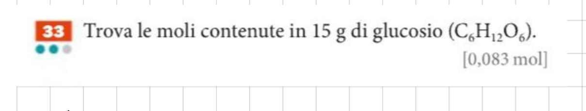
Dati: $m = 15\,\text{g}$, formula del glucosio $\text{C}_6\text{H}_{12}\text{O}_6$.
Massa molare del glucosio:
$$M = (6 \cdot 12) + (12 \cdot 1) + (6 \cdot 16) = 72 + 12 + 96 = \mathbf{180\,\text{g/mol}}$$
Numero di moli contenute:
$$n = \frac{m}{M} = \frac{15\,\text{g}}{180\,\text{g/mol}} \approx \mathbf{0{,}083\,\text{mol}}$$
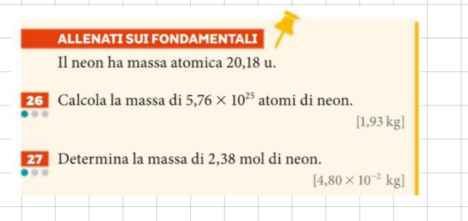
Dati: Massa atomica del neon $M = 20{,}18\,\text{u} \implies M = 20{,}18\,\text{g/mol}$.
Es. 26: Calcola la massa di $N = 5{,}76 \cdot 10^{25}$ atomi di neon:
$$n = \frac{N}{N_A} = \frac{5{,}76 \cdot 10^{25}}{6{,}022 \cdot 10^{23}} \approx 95{,}65\,\text{mol} \implies m = n \cdot M = 95{,}65 \cdot 20{,}18 \approx 1930\,\text{g} = \mathbf{1{,}93\,\text{kg}}$$
Es. 27: Determina la massa di $n = 2{,}38\,\text{mol}$ di neon:
$$m = n \cdot M = 2{,}38\,\text{mol} \cdot 20{,}18\,\frac{\text{g}}{\text{mol}} = 48{,}03\,\text{g} = \mathbf{4{,}80 \cdot 10^{-2}\,\text{kg}}$$
Capitolo 7: Le Leggi dei Gas Perfetti nel Piano di Clapeyron
A temperatura costante, pressione e volume sono inversamente proporzionali: $$\mathbf{p \cdot V = \text{costante}} \iff \mathbf{p_1 V_1 = p_2 V_2}$$ Nel Piano di Clapeyron $(V, p)$, la curva è un ramo di iperbole equilatera.
A pressione costante, il volume varia linearmente con la temperatura centigrada: $$\mathbf{V(t) = V_0 (1 + \alpha \cdot t)} \quad \text{con } \alpha = \frac{1}{273{,}15\,^\circ\text{C}} \approx 0{,}00366\,^\circ\text{C}^{-1}$$ Nel piano di Clapeyron è un segmento orizzontale. L'intercetta sull'asse $t$ individua lo Zero Assoluto ($-273{,}15\,^\circ\text{C}$).
A volume costante (recipiente rigido ermetico), la pressione cresce linearmente con la temperatura: $$\mathbf{p(t) = p_0 (1 + \alpha \cdot t)}$$ Nel piano di Clapeyron è un segmento verticale.
Nella scala assoluta Kelvin, le leggi di Gay-Lussac diventano di proporzionalità diretta pura: $$\mathbf{\text{Isobara: } \frac{V}{T} = \text{costante} \iff \frac{V_1}{T_1} = \frac{V_2}{T_2}}, \qquad \mathbf{\text{Isocora: } \frac{p}{T} = \text{costante} \iff \frac{p_1}{T_1} = \frac{p_2}{T_2}}$$
Ha senso raddoppiare la temperatura in gradi Celsius?
Risposta sintetica: Dal punto di vista fisico e termodinamico, no, non ha alcun senso.
La scala Celsius è una scala a intervalli (o affinemente traslata) e non una scala di rapporti. Il suo valore zero ($0\,^\circ\text{C}$) è un riferimento puramente convenzionale (il punto di fusione del ghiaccio a pressione atmosferica standard) e non corrisponde affatto all'assenza di moto o agitazione termica a livello microscopico.
⚠️ Le Contraddizioni Logiche e i Paradossi Fisici
- Il paradosso dello zero: Moltiplicare per due una temperatura di $0\,^\circ\text{C}$ darebbe ancora $0\,^\circ\text{C}$ ($2 \times 0\,^\circ\text{C} = 0\,^\circ\text{C}$). Ciò implicherebbe che l'energia interna del sistema rimanga invariata, rendendo il "raddoppio" nullo.
- Il paradosso dei valori negativi: Raddoppiare una temperatura negativa come $-10\,^\circ\text{C}$ porterebbe algebricamente a $-20\,^\circ\text{C}$. Tuttavia, uno stato a $-20\,^\circ\text{C}$ descrive un livello energetico inferiore (più freddo) rispetto a $-10\,^\circ\text{C}$, ribaltando completamente il significato dell'operazione!
- Inconsistenza energetica reale: Passare da $10\,^\circ\text{C}$ a $20\,^\circ\text{C}$ non raddoppia affatto l'energia cinetica media. In unità assolute: $10\,^\circ\text{C} = 283{,}15\,\text{K}$ e $20\,^\circ\text{C} = 293{,}15\,\text{K}$. Il rapporto reale è: $$\frac{293{,}15\,\text{K}}{283{,}15\,\text{K}} \approx 1{,}0353 \implies +3{,}53\%$$ L'incremento energetico reale è di appena il $3{,}5\%$, ben lontano dal $+100\%$ atteso da un vero raddoppio.
🔬 La Prospettiva Termodinamica Corretta
La temperatura termodinamica rigorosa è legata direttamente all'energia cinetica traslazionale media delle particelle:
$$\mathbf{\langle E_k \rangle = \frac{3}{2} \, k_B \, T}$$
dove $k_B \approx 1{,}38 \times 10^{-23}\,\text{J/K}$ è la costante di Boltzmann e $T$ è la temperatura assoluta in Kelvin ($\text{K}$), il cui zero ($0\,\text{K} = -273{,}15\,^\circ\text{C}$) corrisponde al limite asintotico di minima agitazione termica possibile.
⚡ Attenzione Fondamentale negli Esercizi: Il Tranello del "Raddoppio"
Spesso nei testi dei problemi sui gas perfetti (come nel successivo Esercizio 49) si trovano frasi come: «la temperatura del gas raddoppia» oppure «calcola la temperatura finale sapendo che il volume raddoppia».
⚠️ Regola aurea: dobbiamo stare attentissimi all'unità di misura! L'operazione di raddoppio ($T_2 = 2 T_1$) va applicata TASSATIVAMENTE alla temperatura assoluta in Kelvin ($T$), MAI ai gradi Celsius ($t$)!
- Si converte la temperatura iniziale in Kelvin: $T_1 = 20 + 273{,}15 = 293{,}15\,\text{K}$;
- Si raddoppia in scala assoluta: $T_2 = 2 \times T_1 = 2 \times 293{,}15\,\text{K} = 586{,}30\,\text{K}$;
- Si riconverte la temperatura finale in gradi Celsius: $$t_2 = 586{,}30 - 273{,}15 = \mathbf{313{,}15\,^\circ\text{C}}$$
✅ L'Unico Caso Ammissibile: L'Intervallo Termico $\Delta T$
L'operazione di moltiplicazione sui gradi Celsius ha pieno significato matematico e fisico unicamente quando applicata a una variazione o intervallo di temperatura ($\Delta T$), poiché la differenza tra due temperature è invariante rispetto alla traslazione dell'origine:
$$\Delta T = T_b - T_a = (t_b + 273{,}15) - (t_a + 273{,}15) = t_b - t_a = \Delta t$$
Di conseguenza: $\Delta t = 5\,^\circ\text{C} \implies 2 \times \Delta t = 10\,^\circ\text{C} \equiv 10\,\text{K}$.
In sintesi: ha senso moltiplicare un intervallo termico ($\Delta t$), ma non ha senso moltiplicare il valore puntuale di temperatura espresso in scala Celsius ($t$).
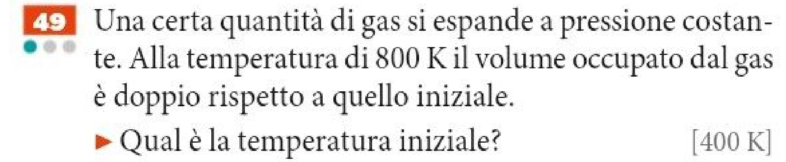
Dati: $p = \text{costante}$, $V_2 = 2 V_1 \implies \dfrac{V_1}{V_2} = \dfrac{1}{2}$, temperatura termodinamica finale $T_2 = 800\,\text{K}$.
Risoluzione con la Prima Legge di Gay-Lussac:
Durante un'isobara il volume di un gas ideale è direttamente proporzionale alla temperatura assoluta:
$$\frac{V_1}{T_1} = \frac{V_2}{T_2} \implies T_1 = T_2 \cdot \frac{V_1}{V_2} = \frac{T_2}{2}$$
Sostituendo il valore numerico:
$$T_1 = \frac{800\,\text{K}}{2} = \mathbf{400\,\text{K}} \quad (t_1 = 400 - 273{,}15 = 126{,}85\,^\circ\text{C} \approx 127\,^\circ\text{C})$$
Interpretazione Cinetico-Molecolare: A pressione costante, il raddoppio del volume dimezza la densità molecolare ($N/V$). Affinché la frequenza degli urti e l'impulso trasmesso alle pareti mantengano costante la pressione macroscopica ($p = \frac{1}{3}\rho \langle v^2 \rangle$), l'energia cinetica media molecolare $\langle E_c \rangle = \frac{3}{2}k_B T$ deve obbligatoriamente raddoppiare, da cui $T_2 = 2T_1$.
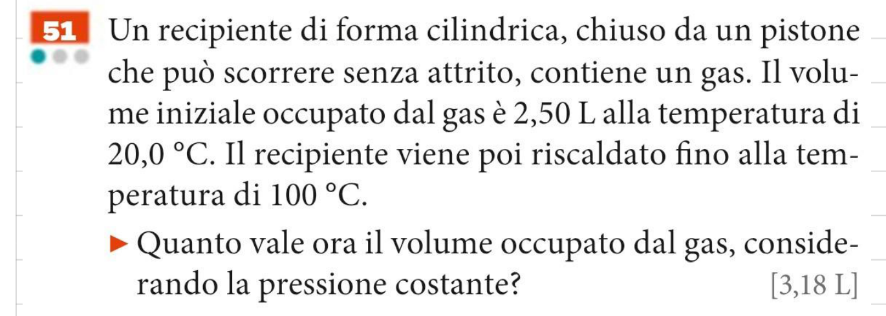
Dati: Recipiente cilindrico con pistone mobile privo di attrito ($p = p_{\text{atm}} = \text{costante}$), volume iniziale $V_1 = 2{,}50\,\text{L}$ a $t_1 = 20{,}0\,^\circ\text{C}$, temperatura riscaldata $t_2 = 100{,}0\,^\circ\text{C}$.
Metodo 1: Temperatura Assoluta Kelvin (Diretto):
$$T_1 = 20{,}0 + 273{,}15 = 293{,}15\,\text{K}, \qquad T_2 = 100{,}0 + 273{,}15 = 373{,}15\,\text{K}$$
$$V_2 = V_1 \cdot \frac{T_2}{T_1} = 2{,}50\,\text{L} \cdot \frac{373{,}15\,\text{K}}{293{,}15\,\text{K}} \approx \mathbf{3{,}182\,\text{L}} \approx \mathbf{3{,}18\,\text{L}}$$
Metodo 2: Formulazione Centigrada Storica con $V_0$:
$$V_0 = \frac{V_1}{1 + \alpha t_1} = \frac{2{,}50\,\text{L}}{1 + 20{,}0 / 273{,}15} \approx 2{,}3294\,\text{L}$$
$$V_2 = V_0(1 + \alpha t_2) = 2{,}3294\,\text{L} \cdot \left(1 + \frac{100{,}0}{273{,}15}\right) \approx \mathbf{3{,}182\,\text{L}} \approx \mathbf{3{,}18\,\text{L}}$$
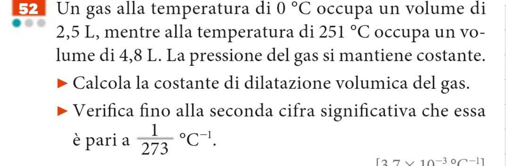
Dati: $p = \text{costante}$, $t_0 = 0\,^\circ\text{C} \implies V_0 = 2{,}5\,\text{L}$, $t_1 = 251\,^\circ\text{C} \implies V_1 = 4{,}8\,\text{L}$.
1. Isolamento Algebrico:
$$V_1 = V_0(1 + \alpha t_1) \implies 1 + \alpha t_1 = \frac{V_1}{V_0} \implies \alpha = \frac{1}{t_1}\left(\frac{V_1}{V_0} - 1\right) = \frac{V_1 - V_0}{V_0 \cdot t_1}$$
2. Calcolo Numerico e Reciproco:
$$\alpha = \frac{1}{251\,^\circ\text{C}}\left(\frac{4{,}8}{2{,}5} - 1\right) = \frac{0{,}92}{251\,^\circ\text{C}} \approx 0{,}0036653\,^\circ\text{C}^{-1} = \frac{1}{272{,}8\,^\circ\text{C}}$$
3. Verifica con 2 Cifre Significative: Con due cifre significative (dati $2{,}5\,\text{L}$ e $4{,}8\,\text{L}$), $\alpha \approx \mathbf{3{,}7 \cdot 10^{-3}\,^\circ\text{C}^{-1}}$, che coincide con il valore teorico universale $\dfrac{1}{273} \approx 3{,}7 \cdot 10^{-3}\,^\circ\text{C}^{-1}$.
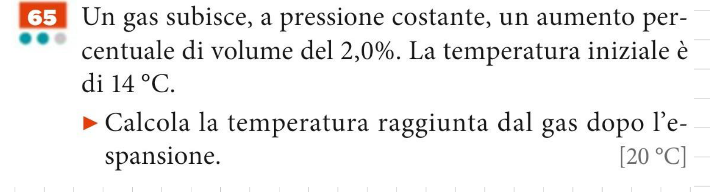
Dati: $p = \text{cost}$, aumento percentuale di volume $\dfrac{\Delta V}{V_1} = 2{,}0\% \implies V_2 = 1{,}020 V_1 = \dfrac{51}{50}V_1$, temperatura iniziale $t_1 = 14\,^\circ\text{C}$.
Risoluzione con Scala Assoluta Kelvin:
$$T_1 = 14 + 273{,}15 = 287{,}15\,\text{K}$$
$$T_2 = T_1 \cdot \frac{V_2}{V_1} = 287{,}15\,\text{K} \cdot 1{,}020 \approx 292{,}89\,\text{K}$$
$$t_2 = T_2 - 273{,}15 = 292{,}89 - 273{,}15 \approx \mathbf{19{,}74\,^\circ\text{C}} \approx \mathbf{20\,^\circ\text{C}}$$
(La risoluzione analitica con la formula centigrada $V = V_0(1+\alpha t)$ conferma identicamente il medesimo valore).
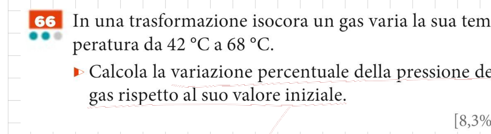
Dati: $V = \text{costante}$, $t_1 = 42\,^\circ\text{C}$, $t_2 = 68\,^\circ\text{C}$.
Risoluzione con Temperatura Assoluta Kelvin:
$$T_1 = 42 + 273{,}15 = 315{,}15\,\text{K}, \qquad T_2 = 68 + 273{,}15 = 341{,}15\,\text{K}$$
$$\frac{\Delta p}{p_1} \cdot 100\% = \frac{T_2 - T_1}{T_1} \cdot 100\% = \frac{341{,}15 - 315{,}15}{315{,}15} \cdot 100\% = \frac{26\,\text{K}}{315{,}15\,\text{K}} \cdot 100\% \approx \mathbf{8{,}25\%} \approx \mathbf{8{,}3\%}$$
Se si calcolano separatamente i binomi centigradi approssimandoli a 3 cifre: $$1 + \alpha t_2 \approx 1{,}24 \quad \text{e} \quad 1 + \alpha t_1 \approx 1{,}15 \implies \left(\frac{1{,}24}{1{,}15} - 1\right) \cdot 100\% \approx 7{,}8\%$$ L'errore assoluto si amplifica per cancellazione numerica sottraendo l'unità. Mantenendo i termini esatti o impiegando direttamente le temperature assolute Kelvin si ottiene rigorosamente il valore corretto di 8,3%.
Capitolo 8: L'Equazione di Stato del Gas Perfetto e la Costante Universale $R$
Un gas reale rispetta con elevatissima accuratezza il modello teorico di gas perfetto quando sussistono contemporaneamente tre condizioni fisiche microscopiche e macroscopiche:
- Bassa densità e rarefazione: La pressione del gas è sufficientemente bassa, tale che la distanza intermolecolare media sia enorme rispetto alle dimensioni geometriche delle molecole stesse.
- Temperatura nettamente superiore alla liquefazione: La temperatura termodinamica $T$ è elevata rispetto al punto di condensazione ($T \gg T_{\text{liq}}$), garantendo l'assenza di cambiamenti di fase.
- Volume proprio trascurabile e urti perfettamente elastici: Le particelle (atomi o molecole) possono considerarsi masse puntiformi con volume proprio trascurabile rispetto al volume totale del contenitore ($V_{\text{molecole}} \ll V_{\text{recipiente}}$). Le interazioni molecolari a distanza (forze attrattive o repulsive di Van der Waals) sono nulle: l'unica interazione consiste in urti perfettamente elastici tra molecole e contro le pareti.
Nelle condizioni ordinarie di temperatura ($20\,^\circ\text{C}$) e pressione ($1\,\text{atm}$), i gas atmosferici comuni ($\text{N}_2$, $\text{O}_2$, $\text{He}$, $\text{H}_2$) deviano meno dello $0{,}1\%$ da questo modello ideale.
Enunciato Fondamentale: Volumi uguali di gas diversi, mantenuti nelle medesime condizioni di temperatura assoluta $T$ e di pressione $p$, contengono esattamente lo stesso numero di molecole $N$ e, conseguentemente, lo stesso numero di moli $n$.
$$V \propto n \quad (\text{a } p = \text{costante}, \quad T = \text{costante})$$
Questo principio dimostra che il comportamento termodinamico di un gas ideale non dipende dalla specie chimica o dalla massa molecolare del gas, ma unicamente dal numero totale di particelle presenti nel volume.
Unificando la legge di Avogadro con le leggi empiriche di Boyle e Gay-Lussac, lo stato termodinamico di equilibrio di $n$ moli di gas perfetto è descritto in modo universale da:
- $p$ è la pressione assoluta del gas, in Pascal ($\text{Pa} = \text{N}/\text{m}^2$).
- $V$ è il volume occupato dal gas, in metri cubi ($\text{m}^3$).
- $n$ è la quantità di sostanza, in moli ($\text{mol}$).
- $T$ è la temperatura assoluta, rigorosamente in Kelvin ($\text{K}$).
- $R$ è la costante universale dei gas perfetti.
Analisi Dimensionale del Prodotto $p \cdot V$
$$[p \cdot V] = [\text{Pa}] \cdot [\text{m}^3] = \left[\frac{\text{N}}{\text{m}^2}\right] \cdot [\text{m}^3] = [\text{N} \cdot \text{m}] = [\text{Joule}]$$ Il prodotto $p \cdot V$ possiede la dimensione fisica di un'energia o di un lavoro meccanico ($\text{J}$). Infatti, durante un'espansione isobarica a pressione $p$, il lavoro meccanico compiuto dal gas sul pistone è esattamente $W = p \cdot \Delta V$. Il termine $nRT$ quantifica l'energia termica associata al moto cinetico delle particelle.
Dall'equazione di stato si ricava l'espressione per la costante universale: $$R = \frac{p \cdot V}{n \cdot T}$$
Nel Sistema Internazionale (SI)
$$R \approx 8{,}314\,\frac{\text{J}}{\text{mol} \cdot \text{K}} \quad (8{,}31)$$
Con $p$ in $\text{Pa}$, $V$ in $\text{m}^3$, $n$ in $\text{mol}$, $T$ in $\text{K}$.
Nelle Unità Pratiche della Chimica
$$R \approx 0{,}0821\,\frac{\text{L} \cdot \text{atm}}{\text{mol} \cdot \text{K}}$$
Con $p$ in $\text{atm}$, $V$ in $\text{L}$ ($\text{dm}^3$), $n$ in $\text{mol}$, $T$ in $\text{K}$.
Poiché $1\,\text{atm} = 101\,325\,\text{Pa}$ e $1\,\text{L} = 10^{-3}\,\text{m}^3$: $$1\,\text{L} \cdot \text{atm} = 10^{-3}\,\text{m}^3 \times 101\,325\,\text{Pa} = 101{,}325\,\text{J}$$ Sostituendo nel rapporto: $$R = \frac{8{,}31446\,\frac{\text{J}}{\text{mol}\cdot\text{K}}}{101{,}325\,\frac{\text{J}}{\text{L}\cdot\text{atm}}} = \mathbf{0{,}082057\,\frac{\text{L} \cdot \text{atm}}{\text{mol} \cdot \text{K}} \approx 0{,}0821\,\frac{\text{L} \cdot \text{atm}}{\text{mol} \cdot \text{K}}}$$
Il volume occupato da una mole ($n = 1\,\text{mol}$) di un qualsiasi gas perfetto vale: $$V_0 = \frac{n \cdot R \cdot T}{p} = \frac{1\,\text{mol} \cdot 0{,}0821\,\frac{\text{L}\cdot\text{atm}}{\text{mol}\cdot\text{K}} \cdot 273{,}15\,\text{K}}{1\,\text{atm}} \approx \mathbf{22{,}414\,\text{L} \approx 22{,}4\,\text{L}}$$
Non mischiare mai le unità di misura! Se utilizzi $R = 8{,}31$, la pressione DEVE essere in Pascal e il volume in $\text{m}^3$. Se utilizzi $R = 0{,}0821$, la pressione deve essere in atmosfere e il volume in litri. In entrambi i casi, la temperatura deve essere SEMPRE espressa in Kelvin!
Dall'equazione generale $p \cdot V = n \cdot R \cdot T$, ponendo di volta in volta costante una delle grandezze termodinamiche per una quantità fissata di gas ($n = \text{costante}$), si deducono matematicamente le leggi storiche:
| Trasformazione | Condizione | Deduzione Algebrica | Legge Storica |
|---|---|---|---|
| Isoterma | $T = \text{cost}$ | $p \cdot V = nRT = \text{cost} \implies \bm{p_1 V_1 = p_2 V_2}$ | Boyle (1662) |
| Isobara | $p = \text{cost}$ | $\dfrac{V}{T} = \dfrac{nR}{p} = \text{cost} \implies \bm{\dfrac{V_1}{T_1} = \dfrac{V_2}{T_2}}$ | 1ª Gay-Lussac (1802) |
| Isocora | $V = \text{cost}$ | $\dfrac{p}{T} = \dfrac{nR}{V} = \text{cost} \implies \bm{\dfrac{p_1}{T_1} = \dfrac{p_2}{T_2}}$ | 2ª Gay-Lussac (1802) |
| Generale | $n = \text{cost}$ | $\dfrac{p \cdot V}{T} = nR = \text{cost} \implies \bm{\dfrac{p_1 V_1}{T_1} = \dfrac{p_2 V_2}{T_2}}$ | Clapeyron (1834) |
In un condotto orizzontale a quota costante: $$p_1 + \frac{1}{2}\rho v_1^2 = p_2 + \frac{1}{2}\rho v_2^2 \implies \mathbf{v_2 > v_1 \iff p_2 < p_1}$$ Dove il fluido scorre più velocemente a causa della strozzatura, la pressione statica è minore.